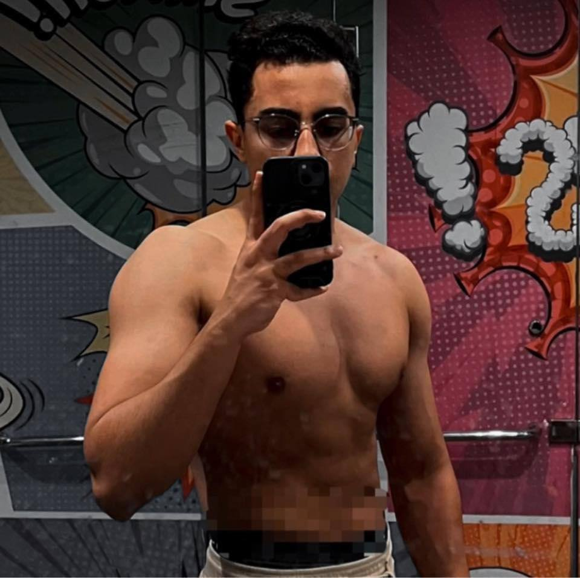

About us

Who are we?
Wasfit Mama is a platform dedicated to exploring the rich culinary traditions of Eastern and African cuisine. Our team comprises passionate Food, Culture, and International Studies (FCAI) students committed to curating an enticing blend of flavors and techniques on our blog.
Our inspiration
Wasfit Mama draws its inspiration from the kitchens of Eastern and African homes, where homemade cooking is an art passed down from mothers through generations. In these vibrant culinary spaces, simple ingredients are transformed into flavorful dishes infused with love and cultural heritage. Our mission is to honor and celebrate the rich tapestry of flavors and techniques found in these kitchens, preserving the essence of homemade cooking that unites families and communities. At Wasfit Mama, we aim to share the warmth and magic of home-cooked meals, inviting others to experience the joy and connection they bring.


Our aim
Discover a world where culinary creativity meets cultural fusion. We are dedicated to enriching the culinary landscape by offering a diverse array of recipes tailored to individual preferences, ingredient availability, and user feedback. Join us on a journey of discovery as we explore the vibrant tapestry of flavors and traditions from around the world.
Join the Wasfit Mama Community
Unlock Exclusive Benefits:
Are you ready to become our next Star Chef? Gain access to behind-the-scenes insights, early peeks at exciting launches, featured recipes, promotions, and products.


Shape the Future:
Your feedback is invaluable. We're built for and by home cooks, and we value your input. As a Star Chef, you'll have numerous opportunities to influence the direction of our brand and programs.
Connect and Grow:
Join a vibrant network of culinary enthusiasts nationwide. Share cooking tips, explore food media opportunities, and attend exclusive events and social meetups throughout the year.


Boost Your Brand:
Become a brand influencer and showcase your culinary skills to our audience. As a Star Chef, you'll be prominently featured in website promotions, marketing campaigns, and our upcoming projects, reaching millions of food enthusiasts.
Leadership Team
Ahmed Yosry
Co-Founder & COO

Mohamed Taha
Co-Founder & CEO
Abdulrahman Mohamed
Co-Founder & COO

Mostafa Anwar
Co-Founder & COO

Yousef Waleed
Co-Founder & COO
Omar Saleh
Co-Founder & COO

Contact us
- Email: Wasfitmama@gmail.com
- Call: +201553217570